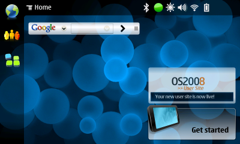
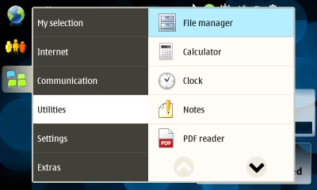
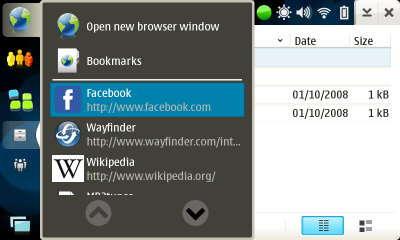
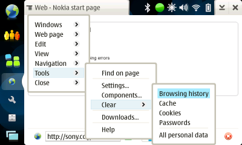
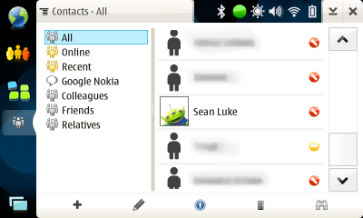
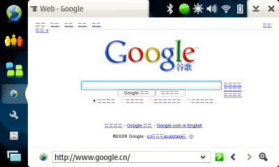
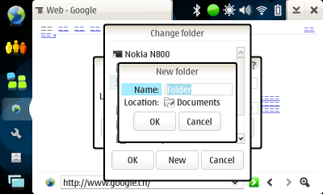
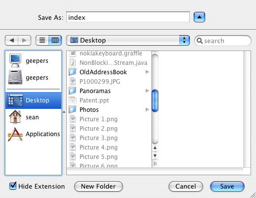
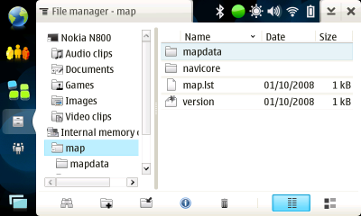
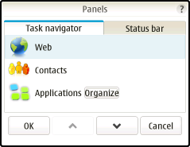

Last year I penned a diatribe which made the rounds in the Internet Tablet community. It compared the N800's UI to the Newton (and not favorably).
Nokia's since come out with a new OS, OS2008, and with it has come a somewhat revised UI, and many people have mentioned that it appears to address issues which I had brought up with respect to OS2007. I wish I could say it has dramatically improved, but it has not. It's prettier: but, I am sad to report, the GUI changes are mostly just skin deep.
What's Improved... Sort Of
Some Icons Have Been Significantly Improved
In my previous diatribe, I railed against Nokia's awful icons, which were obscure, faded and difficult to read, and far too small with respect to their surrounding whitespace. Nokia has fixed some of these problems for some of the icons.The previous worst offenders—the application toolbar icons—have been improved somewhat. Some of the icons are now much bolder and easier to read, and the iconography has been improved (no more "put a star on my envelope").
Consider the new and improved Contacts toolbar. Keep in mind that on the N800 screen, this thing is less than half the size that you see here:
The first three icons are pretty good now, bold and iconographic, though the trash can is hard to read at a distance given that it fades out at top. But the last icon (for "Find") is faded and very hard to read in poor conditions. Why would Nokia fix some icons but not others? It's not clear to me.
Likewise, here's the File Manager toolbar:
 The "+" and down-left-arrow symbols on the folders are good: but the folders themselves are quite hard to read in poor conditions. What's odd is that a bold folder icon is quite trivial to make: at right is one from the Newton.
The "+" and down-left-arrow symbols on the folders are good: but the folders themselves are quite hard to read in poor conditions. What's odd is that a bold folder icon is quite trivial to make: at right is one from the Newton.
It's still irritating how much vertical whitespace is wasted on this bar. These icons could be literally twice their size, without looking squeezed, and be corresondingly more readable. The fundamental problem here is Nokia's slavish reliance on GTK, an amateurish GUI toolkit which has fixed, poorly conceived sizes.
The status bar icons have improved. They're much bolder and more iconographic. But they will rely on a dark background. Nokia has seen fit to make certain that the background is somewhat dark with a shader placed over the background image. But a very light image is still going to make these fade out. It'd have been smarter to allow an option for inverting the icon color.
The New Global Button Bar: A Swing and Miss
The only real difference between the old button bar and the new one is that there is now only space for three running application icons. Additionally, the weird ">>" icon is finally gone, replaced with a more iconographic symbol for popping up a menu to show all available windows. This is an improvement—the bar looks and feels easier to use. But it's a far cry from what Nokia should have done:Dedicated Icons They're still there. There's no way to get rid of the first three icons or the icon at bottom. There's no way to change the functionality of the first two icons—Nokia has hard-coded them to be a "web" icon and a "contacts" icon. You cannot rearrange icons in any meaningful way. You cannot put shortcut icons or your favorite applications on the button bar. As far as button bars go, it's very close to worthless. I went off on this last time and nothing has changed of consequence.
Tiny application icons They're still there. There's more space now that only three of them are allowed on-screen. But they're still tiny. The likely reason: again, GTK's traditional reliance on small application icons. This is a bad excuse—Nokia could easily increase them.
Button Bar Menus
This is the single largest change. All of the button bar icons now pop up finger-friendly menus with relatively intelligently located up/down menu scroll buttons. No longer to the menus scroll by the pixel, and no longer are the scroll buttons on the top and bottom, a slight improvement in wasted space. But there are some serious usability issues still.
There are only 36 menu slots, max, before you have no choice but to start scrolling. But Nokia already has 31 applications filling them. This is particularly bad because of the redundancy inherent in the "Web" and "Contacts" icons, all of which already provide a way to access the browser, contacts, email, chat, and internet call apps, all of which are taking up valuable slot space.
Up/Down Buttons: Whoops Well, they tried. The previous GUI had up/down buttons on top and on bottom of the menu, taking up valuable slot space. The new GUI has them only on the bottom of the menu, still taking up valuable slot space. There is no good reason why the icons should be there: why couldn't they be to the right of the menu? Lest you think that this was just because there wasn't enough "room" in the picture above (which is nonsense), consider the one to the right. Huge up/down buttons wasting space when they could have trivially been to the right of this menu.
Still, it's nice to see Nokia making their menus more readable and usable. Except, um, that these are only the top-level menus. All of the application-specific menus are still tiny and hard to hit with the finger, as shown at right.
Movable Applets
Now you can move the applets. Minor.Extra-Large Scroll Bars In Some applications
 This is a welcome improvement, as it makes possible the use of your finger to manipulate the application.Unfortunately, while the scroll bar has a variable-sized thumb, Nokia still has screwed up scrollbar behavior. Back in 1984, Apple used a fixed-height scrollbar thumb with a gutter (the region between the scrollbar thumb and the up or down buttons). When you clicked on the gutter region, it scrolled by a page.
But along came a better behavior, introduced with the variable-height scrollbar thumb in the Commodore Amiga, and later popularized by the NeXT and later OS X. With a variable thumb, the best usage of clicking in the gutter is to pull the thumb to that location. As you continue to drag, the thumb moves with you. This is particularly useful for people on small devices who can't precisely hit a small variable-sized thumb.
Unfortunately, GTK, which copies Windows, which copies MacOS 1.0, has yet to catch up with modern times. And so we're stuck with a broken scrollbar behavior that's not been updated for twenty years.
If you think Nokia will be putting iPhone-like kinetic drag-scrolling on the N800 or N810 anytime soon, remind yourself that after three OS iterations, they still can't get scrollbars right.
What's Not Improved
Sadly, this is a long list.
No Unicode
It's 2008, and Nokia still doesn't have a unicode font. Not that there's not a huge number of high-quality ones Nokia could have included for free.At right is what google.cn looks like on OS 2008. It's totally broken. This is a complete embarassment. As I mentioned in my earlier diatribe, the Newton (the original PDA) had Unicode trivially available in 1990.
No Screen Rotation
Nokia's devices still remain the only major PDAs which cannot rotate their screens. Now keep in mind that the N810's primary competitor for mindshare is the iPhone, which not only can rotate its screen but can do so just by rotating the device. Nokia's been shamefaced here.No Modifiable Toolbars
In my earlier diatribe I went on at length about the value of modifiable toolbars: both the button bar at left and the application-specific toolbar at bottom. Users should be able to customize these toolbars for their own needs. Nothing's changed here—they're still hard-coded, and often with bad choices.No Windows May Be Moved Or Resized
No moving is irritating enough. But the inability to resize windows is very annoying given that Nokia often makes quite bad design decisions about the size of their dialogs, such as the "Change Folder" dialog. You're stuck with their cramped, bad use of screen space. No Reduction in Modality
OS2008 still requires that applications take up the entire window. No applications may float over others. Relatively little use is made of pop-up menus: rather, many applications require you to wend your way through a maze of dialog boxes.
At right is the standard save panel. If I wih to change my folder, I must pop up a dialog box, select the folder, and press "Okay". Which is almost all the time, as applications rarely remember the last folder I went to and reset themselves to "Documents". If I want to make a new folder, I have an additional dialog box I need to pop up! That's six button taps at least, just to make a new folder.
This kid of ultramodality is everywhere on OS 2008.
At right is Mac OS X's save panel. I can pick my folder, my volume, and my file name all in the same panel. I can even search for filenames and change the display format. And, of course, I can resize the panel as I like, and choose a simplified or expanded view. Why can't I do this on my Nokia? It's not like there's not enough space.
No Persistence
Persistence is the ability of application widgets to remember how you set them after you quit the program and start it again. For example, if you set a scroll bar to a certain location in the "choose folder" panel, it should stay at that location as long as you're in the same folder. There's a reason you set it there. Likewise, if you change the ordering of column headers, or the location of the split pane divider, or default text in a text field, etc., these things should stay put.In OS 2008, just as in the previous OS, nothing stays put. You have to set it all up over and over again.
Not that you can even set the column orderings in some applications. For example, in the File Manager at right, columns cannot be rearranged, removed (who needs "Date"? On my SD cards, all the dates are 1969), or resized. You can change the sort order (sort by Name going Down, say), but it's not persistent. It's reset each time, making it close to useless.
No Sleep
The N800 had, and the N810 has, a secret special mode for going to sleep and shutting off all services. This mode is by far the most useful standby mode: it has an immediate wake and you don't lose data (unlike powering off), yet it allows the device to sleep for weeks instead of the days offered by the standard "turn off screen and lock screen" option. This usefulness explains why Nokia didn't (and doesn't) offer it as a user-settable option. You had to hack low-level linux files to make it available.With OS2008 even this option appears to be failing.
Just Say No to Tiny Buttons
Note to Nokia: your "small"-size button—as exemplified by the "Organize" button at left—is horrible. It's made even more horrible by the good quality buttons below it.The Now Barely Less Awful Contacts App
The Contacts application has improved somewhat. Specifically, they got rid of the "rolodex" toolbar and replaced with a toolbar with actual functionality. As a result, I can now edit a contact or create a new contact with a single click, rather than the many clicks required in the past.
But that's about it.
Filters
The contacts app still wastes a third of its screen space on filters no one uses. Instead of a more logical organization of Contact List at left and The Contact I Clicked On at right, we have to pop up a second window to see the details of a contact.For me, and I suspect for you, the number one function of a contacts database manager (like this one) is to see and edit your contacts information as quickly and easily as possible. Nokia hasn't yet figured this out yet! For a cell phone company, this is downright incompetent.
Custom Fields
Here's another piece of raw, unadulterated incompetence. The Contacts app doesn't allow you to include fields for:- Snail mail addresses (holy cow)
- GPS coordinates (even though the N810 has GPS)
- Anniversaries
- Birthdays
- Job Titles
- Fax numbers
- Notes
- any custom field at all
But that's not the worst of it. The Contacts app also doesn't allow you to specify the kind of phone that your contact is using: cell phone, home, work, main, etc. Yet Nokia's own cell phones allow this. And it's part of the vCard specification, meaning that the Contacts app isn't really vCard compatable.
No PIM
Nokia desperately doesn't want to admit that the N800 and N810 are PDAs. They're not "Internet Tablets". They're not "UMPCs" (they don't run Windows, thank goodness). They are small devices meant to provide services, particularly communications services to the mobile user who doesn't want to have to pull out his laptop. This is exactly what the term "PDA" was coined for.Yet the N800 and N810 are stil missing a crucial suite of software that everyone has begged Nokia to include: a PIM suite. A decent Contacts app, Calendar, Notes, To-Do, and sync capability. Users are forced to download the crummy GPE toolkit. (But at least GPE has a contacts manager that works).
Here's the amazing part. Nokia's phones, from the lowly Series 40 clear up to Series 90, all have a PIM suite. They all sync, to various degrees, and they all have good contacts managers, typically decent calendars and To-do lists, and often okay notes facilities. But Nokia's flagship device doesn't have one. Nokia, you screwed up.